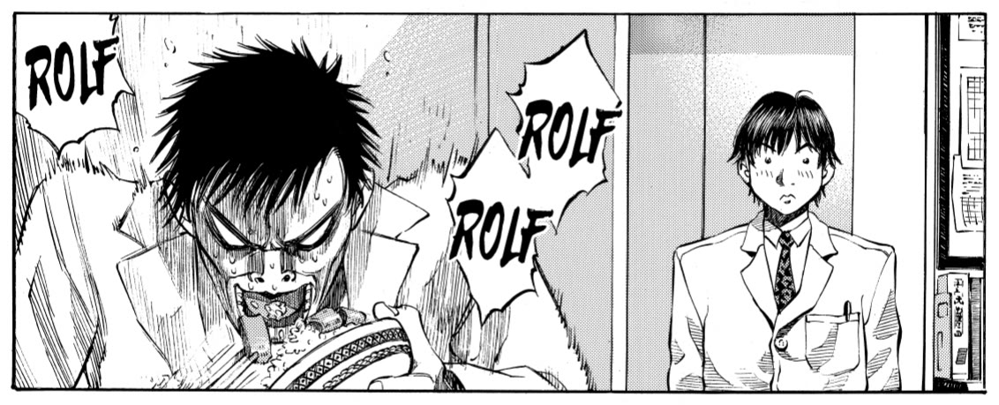
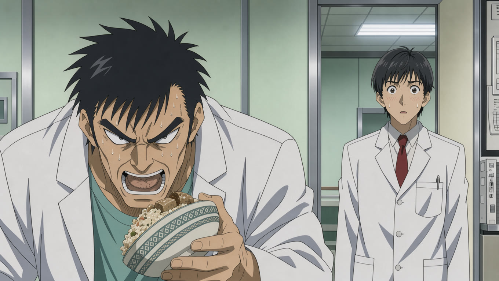
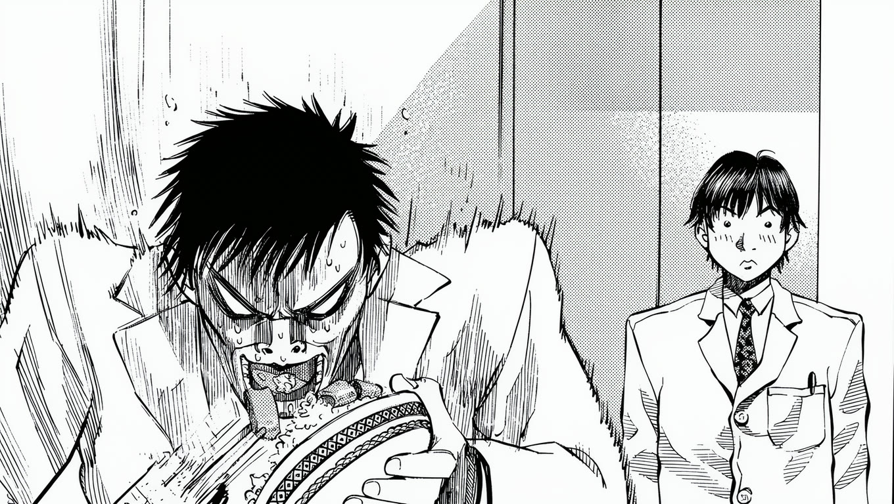

Manga pages in. Voiced video out.
A command-line tool that finds the panels and speech bubbles, reads the text, voices the characters and cuts a reading video or a full anime episode. Run it on Apple Silicon, or use your own API keys.

Demo pages: Give My Regards to Black Jack by SHUHO SATO, used under the author's free-use terms.
From manga page to anime episode
manga anime is the last step. Each panel is repainted as a clean key image, animated with its sound effects for as long as its shot lasts, and cut full-frame with the voices and subtitles. Page four of this demo, from the same analysis and voices as the video above. Turn the sound on:


--style color, the default.
--style bw.# what would this cost? no model is called manga anime bj --backend openrouter \ --image-model black-forest-labs/flux-3-image \ --video-model alibaba/wan-3.0 --dry-run # check the images before paying for clips manga anime bj … --keyframes-only # the episode, refused above 14 s of video manga anime bj … --key-shots-only --max-seconds 18
| This demo | Cost |
|---|---|
| 2 remembered faces and 6 key images, FLUX 3 | About $0.30 |
| 5 clips with sound, 18 s of Wan 3.0 at 720p | About $2.35 |
| 1 bowing shot kept as a still with a camera move, so without sound effects | Free |
AI-colorized and animated adaptation; the colors and sound effects are invented by the models. Redrawing five images during tuning brought the real spend to $2.97. Mouths follow timing cues in the prompt, which is not exact lip sync, and there is no music yet.
Sound effects, one look, the same faces
What makes it feel like one episode instead of a series of clips.
- Sound effects. The video model generates them with the picture, so a knock lands on the knock. They sit under the voices at the same level from shot to shot.
- Nothing goes missing silently. A run ends by listing the shots without sound effects and the command to fix each one.
- One art style.
anime.tomlpins it to one era in every prompt, and the first image becomes the reference for all the others. - Remembered faces. Each named character is drawn once, then reused in every shot. The panel still decides the pose and the expression.
- Across episodes.
--style-fromcarries the style and the faces to the next one.
# the sounds printed on the page manga animate bj p0004_k0 \ --sound "knuckles knocking on a door" \ --characters Saito # the end of a run 1 shots without sound effects: p0004_k1: still image, no clip. To fix: manga animate bj p0004_k1 --sound "..." # the next episode, same look and faces manga anime bj2 … --style-from bj
Ready for TikTok and Shorts
--format vertical outputs 1080×1920. --max-duration 60 stops on a whole shot, never mid-sentence, and --split turns a long chapter into numbered parts. Subtitles sit above the app's own buttons.
This is part one of the demo as a reading video, rendered for free. On manga anime, images and clips are generated in 9:16 and only what you keep is paid for.
manga render bj --format vertical --style panels --max-duration 60 --split
Seven commands from archive to video
Every step is cached and can be resumed. The analysis and the edit are plain JSON, so you can correct a line or retime a shot and render again.
# CBZ, EPUB, PDF, CBR or a folder of images manga import enbj001.pdf --title "Black Jack" manga project new bj --title "Black Jack" \ --from ch1:p11 --to ch1:p14 --lang en manga analyze bj # panels, bubbles, OCR, speakers manga read bj # web reader to check and fix it manga voice bj # one voice per character manga timeline bj # the edit, as timeline.json manga render bj # out/bj.mp4
{
"id": "0002_t4",
"bbox": [320, 1020, 530, 1240],
"panel": 2,
"text": "Graduated from Eiroku University's medical department.",
"speaker": "Director",
"essential": true
}
analysis/0002.json.Real pages need a second read
On page two of this demo, the local OCR saw two neighbouring bubbles as one. A review splits them, restores the words and names who is talking. Choose how that review happens below.
# Apple Vision, one box
"GRADUATED FROM EIROKU UNIVERSITY'S MEDICAL THIS WILL
DEPARTBE YOUR MENT. FIRST TIME ON DUTY... WELL..."
# after review, two bubbles
Director: "Graduated from Eiroku University's medical department."
Director: "This will be your first time on duty... well..."
| Mode | Command | What happens |
|---|---|---|
| Local | manga analyze bj | Magi v2 or Apple Vision. Nothing leaves your Mac. |
| API | manga analyze bj --detector api | Vision finds the boxes and a vision model proofreads each page: Claude by default, or OpenRouter, OpenAI and Google with --provider. Billed, and pages are sent to that provider. |
| Claude Code | the manga skill | Claude Code reads the pages and corrects the JSON, with no API key. Pages are sent to Anthropic. |
Scroll the page, or go panel by panel
The video above uses the default style: the full-width page glides from panel to panel as it is read. With --style panels, each panel gets the frame to itself, with a zoom or a pan and subtitles.
Same analysis, same voices: only the render changes.
Check every line in the reader
manga read opens a local web page with the panels and bubbles drawn over the art. Edit the text, the speaker and the order, and listen to each line.

Bring a panel to life
Mark the shots that matter and render them as short clips. This three-second clip came from Wan 3.0 through OpenRouter, at about $0.45. The same step can run locally with Wan2.2.
manga render bj --backend openrouter --model alibaba/wan-3.0
Draw a new story with the same characters
Crops from the source pages go in as character references. You write story.json, FLUX 3 draws each panel and the tool letters the bubbles. These four panels cost about $0.10 through OpenRouter.
manga story build spin --backend openrouter --model black-forest-labs/flux-3-image

Then dub it like any other project
A spin-off is a normal project, so voices, editing, animation and rendering all work on it. The last panel of this one is animated.
manga voice spin && manga timeline spin && manga render spin
Pick any model with your own keys
Search current models and prices without leaving the terminal, then pass the id to any step. Keys come from environment variables and are never written to disk.
$ manga models search image flux
bfl/flux-3-image-klein gateway $0.008-0.036/image
bfl/flux-kontext-pro gateway $0.04/image
bfl/flux-pro-1.1 gateway $0.04/image
bfl/flux-3-image gateway $0.041-0.607/image
| Step | Providers |
|---|---|
| Review | Anthropic, OpenRouter, OpenAI, Google |
| Voices | OpenRouter, fal, OpenAI, Google, ElevenLabs |
| Animation | OpenRouter, fal, Google, xAI, Replicate |
| Drawing | OpenRouter, fal, OpenAI, Google, xAI, Replicate |
This demo ran on OpenRouter and Anthropic. The other providers are covered by automated tests only, through llm-models and llm-connect.
Or just ask Claude Code
The manga skill runs the whole job: it checks the setup, picks the models, states the cost before spending, reviews every page and hands you the video.
It can run the anime step too: it writes the motion prompts, checks the first key image and the first clip, then does the rest within your budget.
# install the skill once npx skills add maxgfr/manga-anim --skill manga -a claude-code # then, in Claude Code Turn pages 11 to 14 of enbj001.pdf into an anime episode with voices. Keep it under $4.
Everything manga-anim can do
New in this version:
manga anime: a full-frame episode from an analyzed and voiced project, in color or black and white.- Sound effects generated with the picture, and a report of the shots that have none.
- A style bible, a reference image and remembered faces, across runs and episodes.
- Vertical output with a maximum length and numbered parts, for TikTok, Shorts and Reels.
- A vision model can write each shot's motion prompt, with
--direct-providerand--direct-model. --dry-run,--keyframes-onlyand--max-secondskeep the spending under control.- The Claude Code skill installs with
npx skills. - Clips are no longer billed one second too long.
The full list, and how far each part has actually been tested. Run means real pages or real API calls, Tests means automated tests against mocks, Not run means written but never executed for this demo.
| Command | What it does | Where it runs | State |
|---|---|---|---|
doctor | Checks the tools, models and API keys. | Local | Run |
source search, chapters, fetch | Finds and downloads chapters from MangaDex. | MangaDex | Not run |
import | CBZ, EPUB, PDF, CBR, or a folder of images or chapters. | Local | Run with PDF, CBZ and folders. Not run with a real CBR or EPUB. |
library | Lists the local library. | Local | Run |
project new, list, show | Creates and inspects projects. | Local | Run |
analyze --detector vision | Panels, bubbles and OCR with Apple Vision. | Local | Run |
analyze --detector magi | Panels, bubbles, characters and speakers with Magi v2. | Local | Not run |
analyze --detector api | Vision, then a model proofreads each page. | Anthropic, OpenRouter, OpenAI, Google | Run on Anthropic and OpenRouter. Tests on the others. |
manga skill review | Claude Code reads the pages and corrects the JSON. | Claude Code | Run |
read | Web reader to edit text, speakers and order, and listen to each line. | Local | Run |
voice | One voice per character, from cast.toml. | Kokoro, OpenRouter, fal, OpenAI, Google, ElevenLabs | Run on Kokoro and OpenRouter. Tests on the others. |
timeline | Builds the editable cut, keeping manual changes. | Local | Run |
animate | Marks shots for animation, with a motion prompt, sound effects and the characters in view. | Local | Run |
render --style scroll | The full-width page scrolls as it is read. | Local, with clips from any video backend | Run with OpenRouter clips. Not run with local Wan. |
render --style panels | One panel at a time, with zoom, pan and subtitles. | Local, with clips from any video backend | Run with OpenRouter clips. Not run with local Wan. |
render --format vertical | 1080×1920 reading video, with --max-duration and numbered parts. | Local | Run |
anime | Clean key images, clips with sound effects and a full-frame episode, with one style and remembered faces. | OpenRouter, llm-connect providers, local FLUX and Wan | Run on OpenRouter in landscape. Tests on motion prompts by API. Not run locally or through llm-connect. |
anime --format vertical | Images and clips generated in 9:16, up to a maximum length. | OpenRouter, llm-connect providers | Tests, with the real binary against a fake server. |
run | Chains analyze, voice, timeline and render. | Local | Run step by step, not chained. |
characters | Crops the characters found by Magi, to name and reuse them. | Local | Not run |
story new, build | A new manga drawn with a project's characters. | Local FLUX, OpenRouter, llm-connect providers | Run on OpenRouter. Tests through llm-connect. Not run with local FLUX. |
models search | Current models and prices for video, image, speech and vision. | llm-models | Run |
models install | Installs the local Wan and FLUX models. | Local | Not run |
uninstall | Removes the app folder and its links. | Local | Run on a throwaway install. |
Local by default, OpenRouter when you want it
The tool needs macOS on Apple Silicon, with ffmpeg, uv and Rust to build. Each generation step runs on your Mac or through OpenRouter with --backend openrouter, which is billed and sends your text and panels to third parties.
| Job | On your Mac | Through OpenRouter |
|---|---|---|
| Voices | Kokoro-82M, about 350 MB | Any speech model. Used here: ElevenLabs v4 Turbo. |
| Animate chosen panels | Wan2.2 TI2V-5B, about 34 GB to download | Any image-to-video model. Used here: Wan 3.0. |
| Draw a spin-off | FLUX.2 [klein] 4B, about 15 GB to download | Any image model that takes references. Used here: FLUX 3. |
| Anime key images and clips | The same FLUX and Wan models | An image model that takes references and a first-frame video model. Used here: FLUX 3 and Wan 3.0. |
| Panels, bubbles, speakers | Magi v2 (research license) or Apple Vision | Any vision model, with --detector api --provider openrouter. |